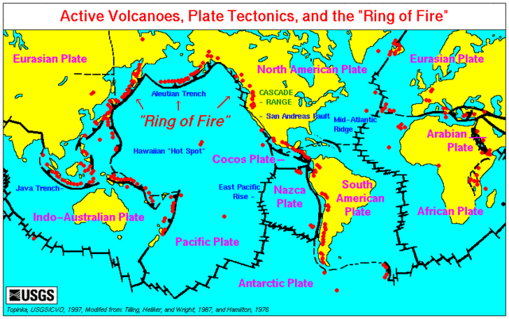

Phenomenon
In the Pacific Ocean there is a pathway of active volcanoes with frequent earthquakes, called the Ring of Fire. The dots represent active volcanoes.

Active Volcanoes, Plate Tectonics, and the "Ring of Fire"
Image by USGS, https://commons.wikimedia.org/wiki/File:Map_plate_tectonics_world.gif; public domain
Observations & Wonderings
- What are you observing about this phenomenon?
- What are you wondering about this phenomenon?